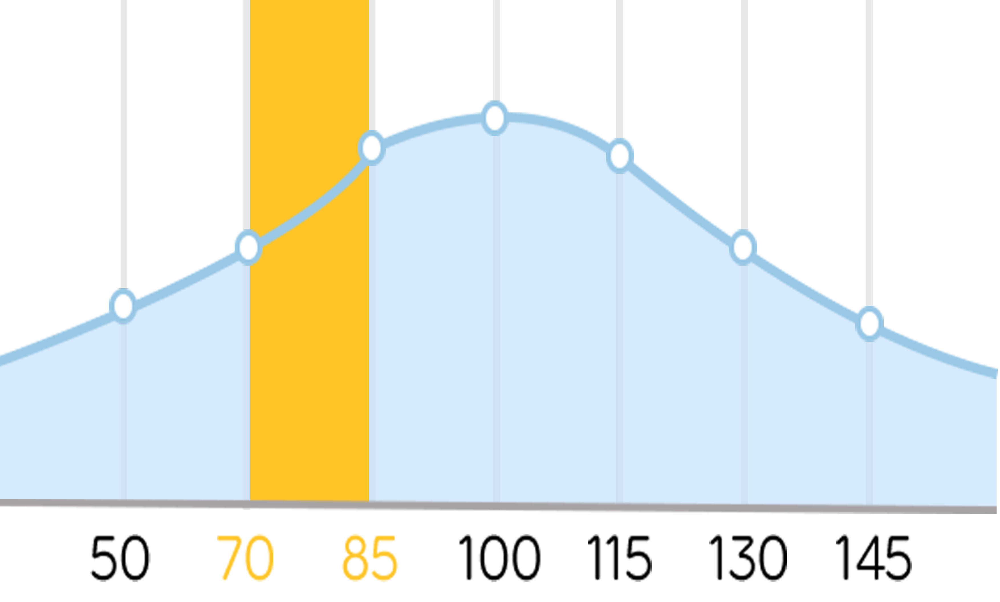

느린학습자란
무엇인가요?
경계선 지능(71~84 DSM-IV 기준)과 그와 유사한 특성으로
사회적 상황에서 어려움을 겪는 사람들로 천천히 배우는
그들의 특성에 따라 느린학습자라고 정의하였습니다.

 우리 아이 발달과정 초기 증상
우리 아이 발달과정 초기 증상
발달적 측면은 복잡한 양상을 나타내며 정확한 진단을 위해서는 전문가의 과학적 거증 단계를 반드시 거쳐야 합니다.

영유아기
신체운동 및 언어, 건강, 발달에서 더디고
의사소통이나 주의집중의 어려움이 나타남

아동기
전반적인 학습의 부진을 보이고 또래간의
문제와 심리정서적인 어려움을 나타냄

청소년기
반복된 학업실패로 인한 인지적 무능감과
부정적 자기효능감, 자아개념에 어려움을
나타냄
우리아이 자가진단해보기

우리 아이의 학습정도는 어느 정도인지 자가진단을 통해 확인해보세요!
국가기초학력지원센터
제공자료 -> 느린 학습자 선별 체크리스트_검사지